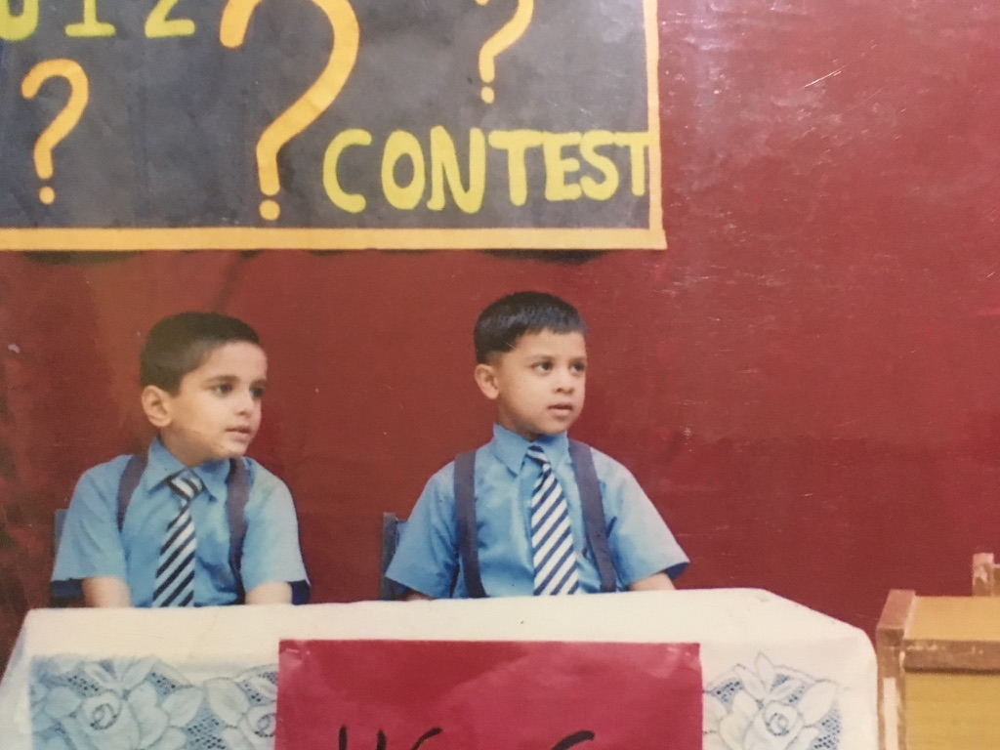

Ode to Quizzing
Quizzing is a peculiar hobby, and an uncommon one.
It is therefore no surprise that it does not have weighty volumes written on its purpose or philosophy, unlike art or music or possibly, whatever it is that they do at the campus literary society (literary criticism or production aren’t amongst their fortes).
Quizzing is also, by chance, my oldest hobby. I participated in (and won) my first quiz at age five. Here’s pictorial proof (I’m the one on the right):

But I digress- this short piece isn’t so much about my experience with quizzing. I might write on that when I’ve had enough of it, but that’s hardly on the horizon right now. What this is, is my obviously biased couple cents on what quizzing is about and how it might be constructive, intended both for novices, as an endorsement, and experienced quizzers, as a friendly holler to mark twain. This “essay” was planned months ago, when I wrote the Twain one (as noted in its fifth footnote), but was expedited by my commissioning for an introductory foreword to the IITK Quiz Club’s upcoming propaganda pamphlet, the Quizzer’s Guide to the Galaxy.
What is quizzing?
Let me phrase this question better: who is a quizzer? In the purest sense, an ideal quizzer is a conscious connoisseur of culture. Don’t worry if you don’t get this quip; the rest revolves around explaining it.

Every human is a product of culture.
By culture, I mean the common things we experience in our lives. For example, a typical IITK guy’s cultural exposure would typically include the IPL, the C programming language, HC Verma, Ramayana, Marvel movies, the Mona Lisa and Johnny Sins (in the form of memes, at least). Some less typical (but by no means rare) examples of cultural phenomena may include football, WWE, Harry Potter, Game of Thrones or Eminem rap. Some rare ones (for IITK) may be the dystopian novel Brave New World, Richard Wagner’s symphonies, or the ideas of Oswald Spengler.
Culture is shaped not only by those things which are popular and consumed by the hoi polloi (“pop culture”) but also things which are prestigious and deemed good by experts (“high culture”). At a competitive level in quizzing, it is important to be knowledgeable about both. In an Indian context, examples of popular culture may include Pokemon, Taarak Mehta ka Ooltah Chashma. Examples of high culture include the poetry of Mir, the novels of Vikram Seth and films like Masaan. Note that there is no hard boundary between the two- there are examples like Gangs of Wasseypur, which are both popular and critically acclaimed.
If we look closely, culture impacts every aspect of our lives- our identity, how we think, who we meet and what we talk about on a date.
An ideal quizzer is someone who isn’t just content being a passive consumer of culture. He values meta-knowledge of culture. He knows that some movies, books et al are better than others, and is curious about which ones and why. He’s curious about their impact both on real life events and other cultural phenomena. He’s passionate about things that are part of his identity, be it football or scifi novels, and enjoys reading things which may appear random or uninteresting, or both, to a normie.
What isn’t quizzing?
Memorising country capitals, flags, currencies (though these may be useful sometimes) isn’t what quizzing is all about. Your school quizzes are a very poor indication of what actual quizzing is like.
It’s a myth that quizzes are all about trivia. A good quiz tests a person’s abillity to guess or logically work their way to an answer given multiple clues, assuming a certain level of familiarity with the cultural context. That assumed level of familiarity varies from quiz to quiz; an Inter IIT Cult Meet quiz will probably require a greater width and depth of knowledge than a Freshers’ Quiz. But in both, just knowing stuff won’t take you too far; you’ll need to eliminate, make logical leaps of faith, and find connections between seemingly unrelated things.
Let’s take an example question (entirely original):
With 10 member football associations, X has the fewest members of all the confederations in FIFA. However, its World Cup qualifiers have been described as the “toughest qualifiers in the world” for their simple round-robin system, entry of some of the top national teams in the world, leveling of the weaker national teams, climate conditions, geographic conditions, strong home stands, and passionate supporters. Identify X.
Let’s see what easy to spot clues the question gives us here: - X is a continental football federation - It has 10 members, so it can’t be UEFA, the Asian Confederation, or the African Federation (basic geography says that these would have more members since these continents have many countries). - It has some of the top national teams in the world. Hmm, probably not North America (CONCACAF). Probably the one that has Brazil and Argentina, innit? - Passionate supporters and strong home stands? It’s got to be the South American one.
The South American federation is named CONMEBOL, as many football fans would know. That’s the assumed familiarity in this question.
But even without this knowledge, with only layman knowledge and basic logic and elimination we were able to come pretty close to the right answer. This is what a lot of quizzing is like (you come close and then realise you don’t know the name. I’m only partly kidding.).

The Prospective Benefits of Quizzing
Any competitive hobby, in the end, is a sport, of the mind, body or both. Every sport rewards and in turn reinforces (and selects for) certain traits and behaviours. In the case of quizzing: - It strongly encourages inquisitiveness, aka curiosity. Duh. - It encourages exploring diverse things. - It incentivises consuming good works ; reading good books, listening to great music (I’ve watched more good movies after starting MELA quizzing than before; as they say, there’s no better read/watch/play list than a good MELA - Music, Entertainment, Literature, Arts- quiz) - It rewards the ability to find parallels and connections between things. If not new brain cells, you’ll at least build a few synapses along the way. (Did you know that you can only ever lose brain cells; they stop reproducing after birth.) - It rewards good memory. Memory is underrated as an asset. - It rewards quick information recall. - It rewards quick thinking. When you have 10 seconds to pounce, your brain gets that instinct to traverse between neurons at a pace it didn’t know was possible.
Quizzing also serves as a proxy for helping develop encyclopaedic knowledge and wide reading across domains; things that are said to make one a good generalist.
Being a good quizzer gives you the bandwidth to continue a conversation with anyone about their hobbies, work or background for at least as long as the time you’ve surfed its Wikipedia page. That is, if you manage to start a conversation.
The dark side of quizzing
It is possible in theory, to be a good Literature quizzer without having read any books, if you commit to memory enough Wikipedia pages of famous books. But is there really any point to such a prowess?
In my opinion, not at all.
Quizzing is not an end in itself; it is just a game that rewards you for diligently doing what you love. Watching movies? Reading books? Following sports? Reading history? There are quiz genres for all of these and you’re welcome to participate. But don’t let playing become mere practicing- it’ll ruin your fun in the long run.